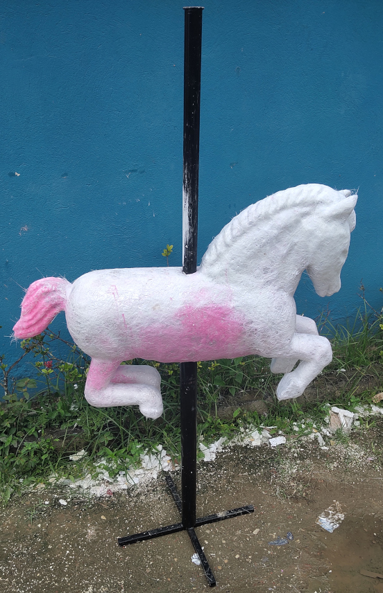
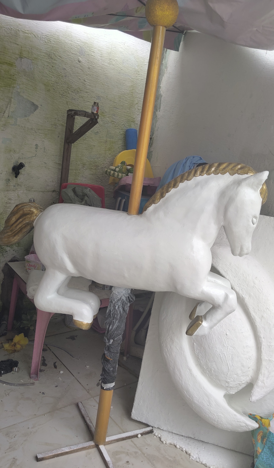

Leveza que Ganha Vida
Em um universo de artes aqui você encontrara carinho esculpido em cada curva, nossas criações ganham vida
em
cores e
harmonia na fusão de isopor e fibras, nós nos esforçamos para capturam a essência da natureza da
forma.
Cada peça e trabalhada manualmente trazendo personalidade expressiva a obra, fazendo com que esta seja
mais do que
um objeto inanimado mas seja uma representação visual do seu negocio ou uma parte importante da
decoração de sua
festa.
Beleza e durabilidade, nos temos peças para diferentes ambientes e para os mais diversos espaços,
ao explorar nossa coleção se você não se identificar com algo que traga a tona a sua inpiração fale conosco
faça parte desta jornada
artística
podemos fazer a sua ideia virar arte.
A complexidade da peça determina o tempo de entrega do produto final, como mencionado acima são produtos trabalhados manualmente um a um confecionadas com muito carinho e cuidado, exemplo os porquinhos apresentado nessa seção não tem muitos detalhes suas medidas foram de 55 x 38 cm, e levaram em media 4 dias para a sua entrega.
Cavalo de carrossel, essa peça teve não so o trabalho no isopor mas tambem a confecção de um suporte exclusivo para ela que pode suportar uma criança de ate 32Kg, suas medidas foram de 100cm do queixo a ponta da cauda, 76cm do casco dianteiro a ponta da crina em sua cabeça e o suporte tem 170cm de altura.
 